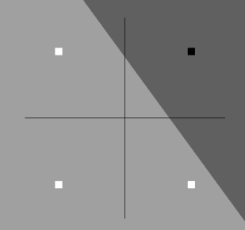
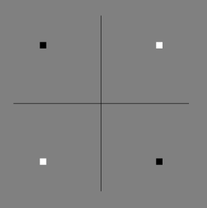

Convergence and Limitation
Although the perceptron learning rule is simple, it is quite powerful. In fact, it can be shown that the rule will always successfully find a set of weights that separate the data as shown above, given that such a set exists. The perceptron learning rule is guaranteed to converge to a solution in a finite number of steps, so long as a solution exists. This brings us to an important question. What problems can a perceptron solve? Recall that a perceptron is able to divide the input space into two regions by a linear boundary. If we have a dataset wherein a line can be drawn that separates the two classes we’re interested in, then the perceptron is an excellent choice for classifying on that set, as it is guaranteed to find a working solution. But in reality, very few datasets afford such a simple solution. The dataset for which a perceptron can work is called a linearly separable dataset, which form a very small minority of real world case problems.
Below is an example of an AND-gate set, which has two classes, white for 0 and black for 1. We can see that for such a set, the perceptron is guaranteed to find a working solution.

Below is an example of an XOR-gate set, which has the same classes as above. Notice that there is no line that can separate these four points by class.

This issue was one of the first to be seriously studied in machine learning. Nowadays, such a problem is extremely trivial. Perceptrons as defined here are just too weak, for all their nice properties, to solve such a task. However, this shouldn’t be taken as a criticism of the method. Our cutting edge methods, especially what we now call deep learning, are ultimately a major extension and abstraction of the perceptron. There is a more general class of classifiers, of which Perceptrons are the first described, simplest, and in some ways weakest, called the artificial neuron, or AN. ANs were designed to overcome the limitations of the perceptron. Perceptrons should be seen as a building block, conceptually and almost literally, of all our current cutting edge methods, and understanding the model is the best way of understanding deep learning at large.